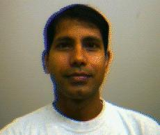

WEEKEND THOUGHTS # 22

Dear Readers,
Often we talk about identity crisis for second generation Indians, born and brought up in this country. Have we ever thought about the first generation, who come to this country, in most of the cases as student, before settling down! Okay, let aside the factor of another country; to generalize the matter; what happens when someone steps outside his/her hometown, then the homestate, then the country. Have you ever thought of the tranformations, you have gone under! Or, was there any change at all ! Was it tough or easy for you moving across these boundaries ! Did it make a difference in your life or your individuality, your personality!! The author expresses his feelings. The title perfectly describes the situation -
"Am I an Oriya, an Indian, or just a human being?"
The author, Raikanta Sahu fares from Ganjam District of Orissa. What follows is an excellent information put forth by Raikanta himself on his background. We start with his self-introduction and then move to the article. The article is reviewd by Purna C. Mohanty of California.
You may send your comments to the author directly at his address, or you are welcome to reach me or Debasmita Bhai(misra@maroon.tc.umn.edu).
With regards
Surjit Sahoo (7/28/95)
(ssahoo@ingr.com)
Posted By: Debasmita Misra (misra@maroon.tc.umn.edu)
Raikanta Sahu
Email ID: rsahu@mail.unm.edu
Education : HSC - Aska(1980), ISc - Khallikote College, BAM(1982), B.Tech(Civil), IIT, Kharagpur(1986), M.Sc(Civil Engg.), UNM, Albuquerque (1991), Continuing with my PhD work in Civil Engg at UNM.
Extra curricular interests : yoga, chess, country music, racquetball, tennis, cricket.
Am I an Oriya, an Indian, or just a human being?
It was in 1982 that I consciously took a decision that has changed my outlook quite a bit. In August 1982, I arrived in Patel Hall of Residence, IIT, Kharagpur to lay the foundations of my career. During the first month I realized how inadequately prepared I was to communicate and interact with non-Oriyas. At that time I could barely finish a sentence in a language other than Oriya. Rightly or wrongly I decided that I was going to make friends with non-Oriyas more than Oriyas. The rationale for the decision was I was going to learn to be proficient in at least two languages, Hindi and English.
Some of my batchmates/juniors/seniors from IIT, Kharagpur are active on ORNET. I am sure many of them viewed life differently, and stuck to Oriya groups more than I did. We had, most likely it is still there, a society called Kalinga Samaja at Kharagpur. I took part in some of its activities, but did not allow myself to be totally involved. Somewhere along the way of getting a bachelor's degree, I came to identify myself more as an Indian than an Oriya. So much so that during the farewell ceremony of Kalinga Samaja for our batch, I got up to the podium to say I did not think Kalinga Samaja was necessary. I wonder how people reacted at that time to that statement.
During my stay at Kharagpur, I used to hang around a group of guys of wonderful mix. There was I, with a Punjabi from Delhi, a second Punjabi from Jaipur, two Gujaratis from Bombay, two Malayalees from Bombay, an UPite from Ranchi, a Bengali from Assam. By the time I came out from Kharagpur, it didn't matter to me whether the person I was speaking to came from Orissa, Kerala, or Kashmir. Subsequently, I found people from Orissa taking interest in me just because I was from Orissa. But I failed to return the favor on many an occasion.
My indentity merge was more or less complete by the time I stepped out of Kharagpur with a degree in hand. I was helped along the way by the fact that I have stayed away from Orissa since 1982. I haven't had the chance to read through a decent Oriya book that is culturally awakening or enlightening since I started my engineering career. The books I have read since then that have left an impact on me have been either with an Indian perspective or a human perspective. I haven't had the chance to watch an Oriya movie or listen to Oriya songs. Most of these have been by choice, I suppose. If I had wanted to really stay in touch with Orissa, I could have done something about it.
Last time I was home, I got a chance to be part of the audience of a Danda Nacha. I didn't ever remember enjoying Danda Nacha. But that day I did. Matter of fact, I found the Halia Geeta part amazingly pleasing. I started wondering how nice it would be to listen to Dasa Kathia, which I used to enjoy a lot in my childhood.
This experience made me realize that I hadn't been de-Oriya-culturalized. Given a chance, I will probably still love to read Oriya books, watch good Oriya movies, listen to music with Oriya character, etc.
So what is the identity transformation that I am talking about? I stopped expecting special treatment from Oriyas while I was in India, from Indians while I am in this country. I did not want to extend special treatment to Oriyas while I was in India, to Indians while I am in this country. Have I become a betrayor of motherland? Have I forgotten Jananee Janmabhumischah Swargadapi Gareeyasee? The answer lies in what you consider your motherland. In order of decreasing selfishness I CONSIDER one of the following to be pretty good places to identify oneself with.
1. Oneself 2. + one's parents and siblings 3. + one's uncles, aunts, and cousins 4. + one's village 5. + one's ... 6. + one's state 7. + one's country 8. + the whole humanity
Your motherland can be just yourself or it can embrace the whole humanity. Having crossed the borders of the state and the country, we sometimes try to preserve our culture beyond the borders. Does it help anybody? Perhaps it does. But it also promotes cultural bigotry. Enclosed is an excerpt from an article that was posted in ORNET sometime back. I thought it was interesting and enlightening.
Have a good weekend.
Raikanta
The author has done a good job in Solving the Identity Crisis, which is especially important in the present world of cultural bigotry. The author has faithfully conveyed how the transformation takes place in a Young Oriya mind, once he/she comes out of the state and stays in a different environment at an early stage of life.
The author has started his message with a low-profile note to most of the Oriyas. Some of us may get upset in the beginning. But as you go on reading the article, you can figure out the genuine underlying feeling of the author as an Oriya and also as a human being.
The author has certainly the attitude to be highly successful in life. He can get along with any kind of people and get his work done in good spirit. The message, author has conveyed to all of us, is in his definition of the motherland. He has rightly pointed out that first and foremost is I or self. If I am OK, then I can see that No.2 (in the article) are OK, and then so on.
The author may have given some examples in the context of decreasing selfishness in the definition of motherland. One example, comes to the reviewer's mind, is the Successful Story of MICROSOFT and Bill Gates. You believe it or not, you got to be selfish sometimes to move up in life.
The reviewer strongly believes that this article will certainly act as a catalyst in reviewing our various actions/steps in life.
Purna C. Mohanty
Your comments are always welcome...

 Raikanta Sahu
Raikanta Sahu


![[IMAGE]](mult.gif)
![[IMAGE]](jag.gif)
Ride back to Home Page...
![[IMAGE]](rath.gif)